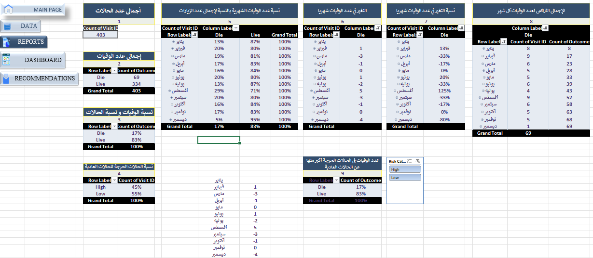
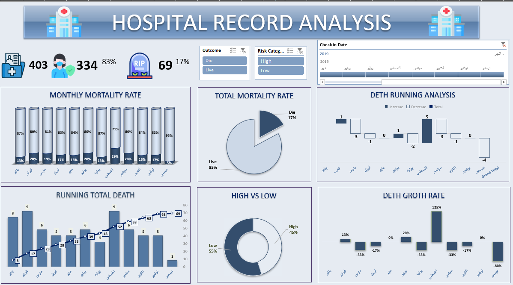

Excel Case Study
Hospital Record Analysis
Project Overview
Developed an interactive Excel dashboard to analyze hospital patient outcomes, mortality patterns, risk categories, monthly death trends, and cumulative death performance.
Performance
Key KPIs
403
Total Cases
334
Live Cases
83%
Live Rate
69
Death Cases
17%
Mortality Rate
45%
High-Risk Cases
55%
Low-Risk Cases
Data Analysis
Pivot Tables and Analytical Calculations
Data Analysis & Pivot Tables

Built structured Pivot Tables and analytical calculations to evaluate total cases, patient outcomes, mortality rates, monthly death variations, cumulative deaths, and risk categories before developing the final interactive dashboard.
Final Dashboard
Hospital Record Analysis Dashboard
Interactive Dashboard

The final dashboard tracks monthly mortality rate, total mortality rate, running total deaths, death growth rate, and risk distribution using interactive filters for outcome, risk category, and check-in date.
Analysis
Key Insights and Recommendations
Key Insights
- The dataset includes 403 hospital cases, with 334 live cases and 69 death cases.
- The overall mortality rate reached 17%, while live cases represented 83%.
- Monthly mortality rates showed noticeable fluctuations across the year.
- Running total death analysis helped track cumulative mortality movement over time.
- High-risk cases represented 45% of the dataset, compared with 55% low-risk cases.
Recommendations
- Investigate months with significant mortality increases to identify clinical or operational causes.
- Monitor high-risk cases more closely through stronger follow-up and prioritization.
- Use monthly mortality trends to support resource planning and targeted clinical review.
- Track cumulative death patterns to detect early warning signals and performance changes.
- Review patient outcomes by risk category to improve care quality and risk management.